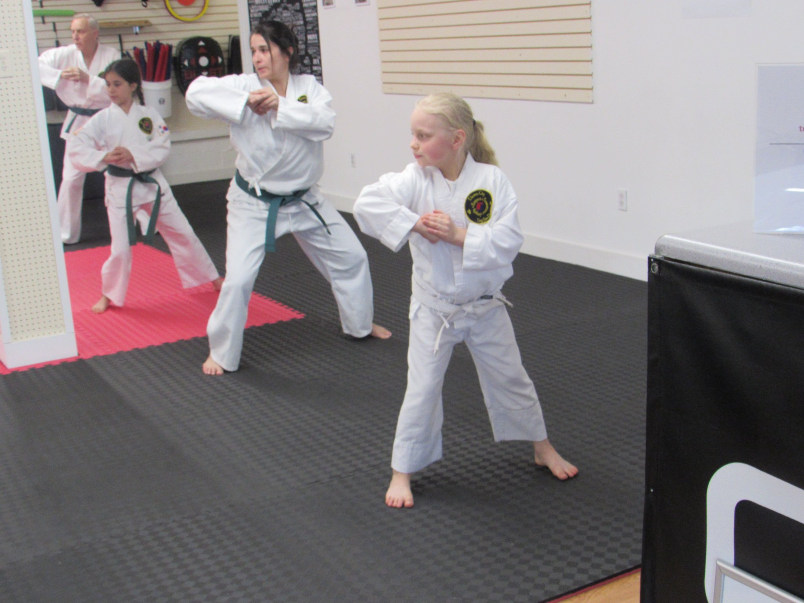

Discipline
Small, consistent efforts create lasting progress.
Train with purpose
Electric City Tang Soo Do is a welcoming martial arts school where kids, teens, and adults build strength, confidence, and character together.
Our approach
We teach the traditional Korean martial art of Tang Soo Do alongside Arnis, using clear instruction, purposeful repetition, and encouragement. Our self-defense training also incorporates grappling and ground fighting so students can build practical skills for a wider range of situations.
Our goal is not just to teach techniques. It is to help students become more focused, resilient, respectful, and ready to meet everyday challenges with confidence.

Our community
The practice
Small, consistent efforts create lasting progress.
We learn with humility and help our training partners improve.
We build the courage to try, adapt, and keep going.
Meet the instructors
Our instructors bring patience, structure, and care to every class. They demonstrate each technique clearly, offer thoughtful corrections, and help students build confidence one step at a time.
Whether you are stepping onto the mat for the first time or continuing an advanced practice, you will train in an environment built around respect, focus, and steady progress.

Owner and Master Instructor
Mike began his training in 2003 in the art of Tang Soo Do under the direction of International Grandmaster Frank Trojanowicz (Dan #13333). He has been instructing children and adults since 2005.
In 2014 Mike was recertified as Sam Dan (3rd degree black belt) by the World Tang Soo Do General Federation Moo Duk Kwan Korea under Grandmaster Choi Hee Suk (Dan #3).
In 2017 he traveled to Atlanta, GA to the Global Tang Soo Do Association headquarters to test for and was awarded 4th Dan, or Master rank, under Grandmaster T.H. Kim (Dan #21962).
In 2022 he traveled to Florida and tested for and was awarded 5th Dan by Grandmaster David Sgro, head of Moo Yea Tang Soo Do.
Mike has competed in tournaments in the categories of forms, weapon forms, breaking, and free sparring, placing in many categories and specializing in breaking.

Master Instructor
Jacob began his training in 2004 in the art of Tang Soo Do under the direction of International Grandmaster Frank Trojanowicz (Dan #13333). He is currently a Sa Dan, or 4th degree black belt.

Instructor
Chris has many years of experience as a public school teacher and brings that knowledge and training to the classes he leads.
He started his training in Tang Soo Do at Electric City Tang Soo Do in 2015. Chris was the first student to start as a white belt and successfully achieve black belt in our school.
He is currently a Sam Dan, or 3rd degree black belt.

Instructor
Tony started his martial arts journey in Taekwondo at the age of 5 in Texas. When his family moved to PA, Tony began training in wrestling and grappling, which he continues to hone to this day.
He began training in Tang Soo Do in 2013 and trained under a few different masters due to moving around.
Tony is currently a Sam Dan, or 3rd degree black belt.

Instructor
Alison brings many years of knowledge and experience as a public school teacher to the classes she leads.
She started her training in Tang Soo Do at Electric City Tang Soo Do in 2018. Alison is the first female student to start as a white belt and successfully achieve black belt in our school.
Alison is now an Ee Dan, or 2nd degree black belt.
Try a complimentary week and meet the Electric City Tang Soo Do community.
Claim Your Free Week